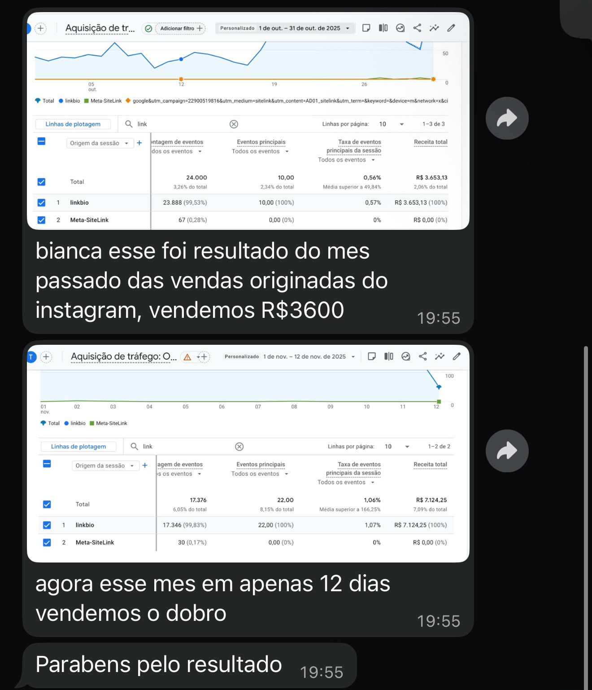
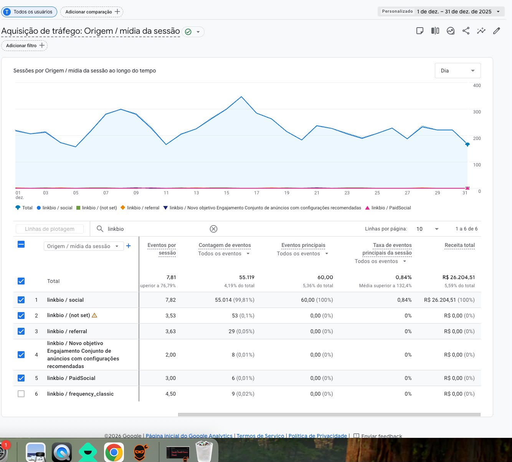
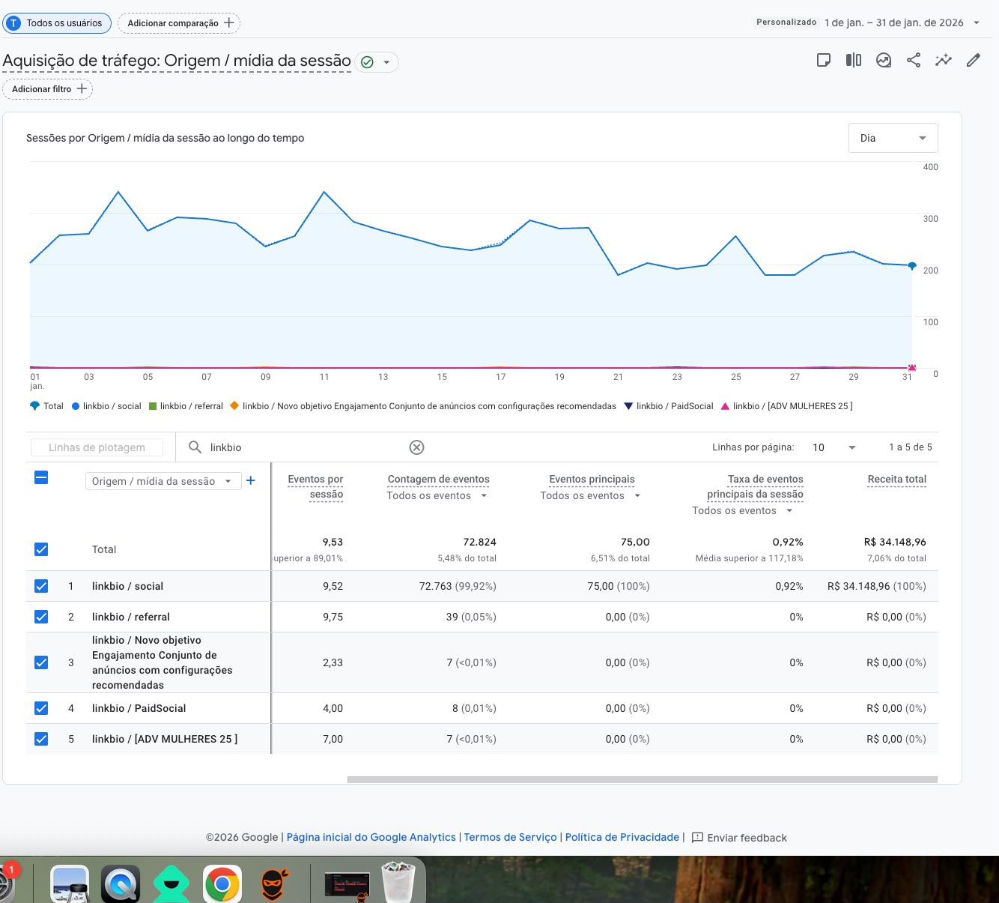

Estratégia, conteúdo e resultado — alguns dos projetos que já conduzi.
@michelassisupermercados
Supermercado local que tinha como objetivo:
Bar & Restaurante
Bar e restaurante local que tinha como objetivo:
O bar nasceu da ideia de dois amigos cansados de não ter opções de lazer na cidade. Participei como criadora de conteúdo e estrategista, em parceria com uma agência. Depois da inauguração, o pedido passou a ser crescer sem precisar investir em tráfego pago.
@santacasadebariri
Hospital filantrópico que tinha como objetivo:
O projeto começou por um valor simbólico entre 2023 e setembro de 2024. Depois disso, fui convidada a assumir de forma integral a comunicação da instituição, como encarregada de comunicação — função que sigo até hoje.
@chinhogato
Projeto audiovisual "Chinho Gato e o Legado da Esfinge", fomentado por lei de incentivo à cultura, com o objetivo de:
Varejo de Moda
Loja de moda local que tinha como objetivo:
Com base nesse pedido, criei uma estratégia de conteúdo para elas executarem no WhatsApp e no Instagram.



Quer conferir esses e outros cases completos?
Falar no WhatsApp